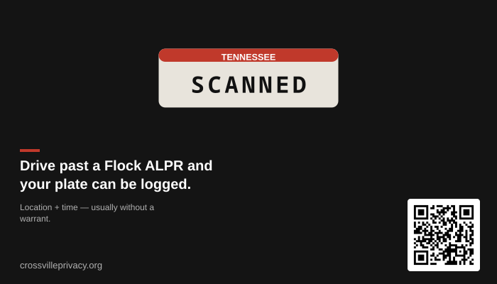
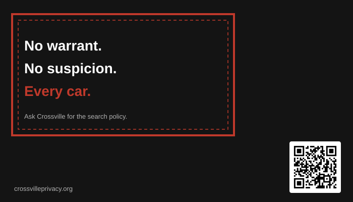
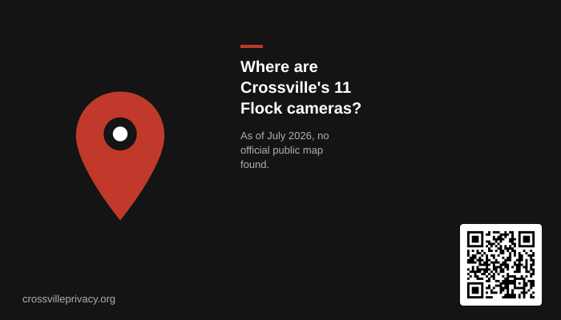
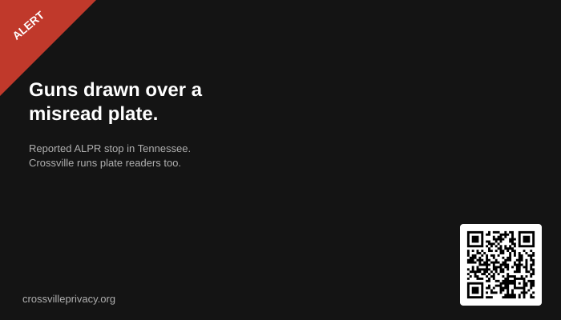
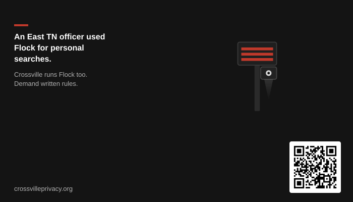
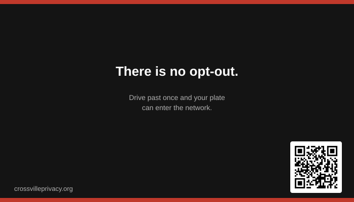
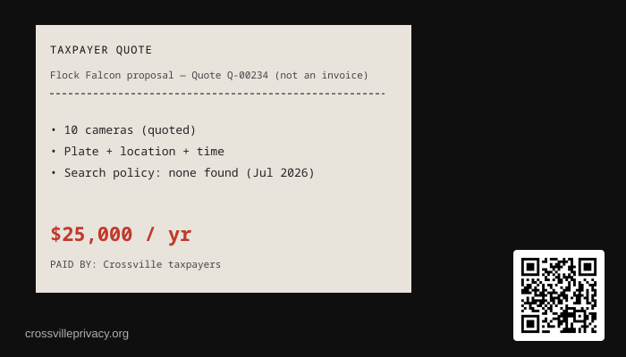
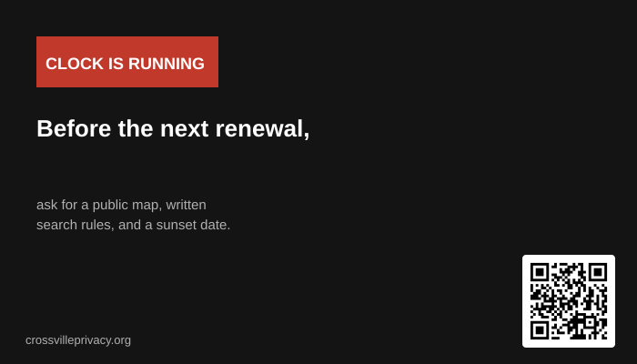
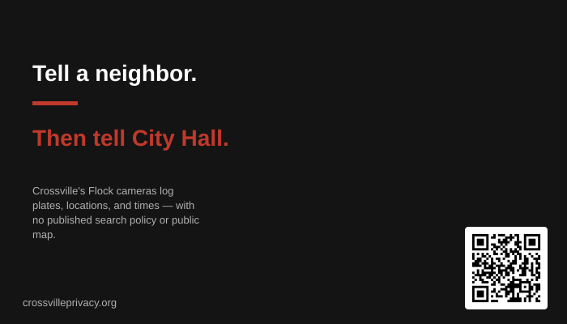

One-page leave-behind: Atlas 11 cameras, Quote Q-00234 ~$25k/yr for 10 (confirm invoices), asks (cancel/remove, yearly public vote, map, search rules). Place in packets or hand to officials before the meeting.
Download PDF →A decorative Flock Safety camera appears in the top-right of the banner, as if watching Crossville landmarks below.
Tools · Handouts
CrossvillePrivacy
Cards, tear-off flyers, and council packet inserts you can print and hand out. Email council too — print alone is not enough.
Main Street photo: Brian Stansberry / Wikimedia Commons (CC BY 4.0) Corner Flock camera: cutout from Malwarebytes (horizontally flipped; sky removed)
Print materials
Council meetings
Council packet insert
Bulletin boards
Tear-off flyer
Elections
Candidate questionnaire
Renewal countdown
Countdown handout & stickers
Quote Q-00234: ~$25K/yr for 10 Falcons — confirm live cost.
Scan me.
Doctor. Church. School. Grocery.
Flock cameras scan ordinary drivers, not only people already suspected of crimes.
Surveillance doesn't equal safety.
One email can put Flock on the agenda.
You're not the suspect. You're the dataset.
Flock cameras. No official public map (as of July 2026).
Who searched your plate last month?
If every trip is logged, what part is still private?
Records every passing plate; marketed around investigations and alerts.
Printables for Crossville — cards, packets & forums
Hand these out, leave them on community bulletin boards (with permission), put them in council packets, or bring them to candidate nights. Independent community materials — not affiliated with the City of Crossville.
Action printables (US Letter)
One-pagers built for real-world moments: council meetings, library/co-op boards, elections, and the renewal countdown.
Letter-size poster with perforated-style tear strips (“Email City Hall,” “Ask for the map,” QR). Designed for library, co-op, and church boards.
Download PDF →Seven yes/no/explain questions on the map, search policy, supervisor approval, sunset, outside agencies, annual report, and misuse response. Use before Dec. 2026 races.
Download PDF →Printable Aug 26, 2026 anniversary poster plus cut-apart calendar reminders for fridges, desks, and planners — matches the live countdown at the top of the site.
Download PDF →Business cards for coffee shops, boards & events
Each design links to crossvilleprivacy.org via QR. Two PDF downloads per design: an Avery 8371 sheet (10-up, US Letter) for home/office printers, and a single 3.5×2 in card for UPS, Staples, and other print shops. Print at 100% / actual size — do not fit-to-page.
Follow posted rules and ask permission on private property. Inspired by the outreach cards at deflocksc.org/toolkit/outreach. Artwork and Crossville copy are original.

Drive past a Flock ALPR and your plate can be logged.
Mass plate capture usually needs no warrant.
Where are Crossville's 11 Flock cameras?
Guns drawn over a misread plate.
An East TN officer used Flock for personal searches.
There is no opt-out.
Quote Q-00234 — $25,000 / yr proposed for 10 Falcons
Before the next renewal: ask council to cancel Flock and remove the cameras. If they stall, demand a yearly public vote, a public map, written search rules, and no automatic renewal that skips a public vote.
Tell a neighbor. Then tell City Hall.Yard signs & other real-world outreach
Physical materials from the wider DeFlock / anti-ALPR network — useful alongside the Crossville cards above. These are third-party shops and toolkits; CrossvillePrivacy.org does not sell them and is not affiliated with the vendors. Place signs only where you have permission.
Yard / awareness signs
DeFlock Signs
18″×24″ weatherproof ALPR awareness signs with several message options (tracking, consent, Fourth Amendment, private networks).
Browse signs →
Yard sign
DeFlock.me yard sign (Agora)
18″×24″ “Your local government spies on you” style yard sign with stake — another print run used by DeFlock organizers.
View product →
Printable toolkit
DeFlock SC outreach kit
Business-card print sheets, one-pager, and conversation starters from the Maryville project.
Open toolkit →
Organizing + share graphics
ACLU Get the Flock Out toolkit
Model bills, resolutions, sample emails, and social graphics for local campaigns against Flock-class ALPRs.
Open ACLU toolkit →
National week of action
NoALPRs.com
DeFlock-linked national week-of-action hub with organizing guides for town halls, council meetings, and local events.
View week of action →
Field model
DeFlock Atlanta
Example of a local chapter placing awareness signs near cameras and documenting the network — useful reading, not a Crossville chapter.
See their approach →
Also: deflock.org/groups (find other local organizers) · Email Crossville officials after you’ve got materials in hand.